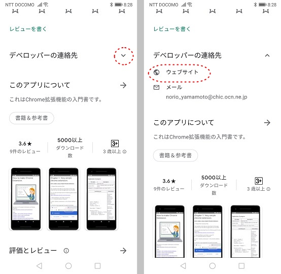

Chrome拡張の作り方

Chrome拡張の最新情報は以下のサイトを参照して下さい。
https://developer.chrome.com/docs/extensions/
目次
このマニュアルに記載されているプログラムは、私のWebサイトからダウンロードできます。
GooglePlayのこのアプリのページから私のWebサイトにアクセスできます。
https://play.google.com/store/apps/details?id=jp.co.yamamoto.norio.howtomakechromeextension2
